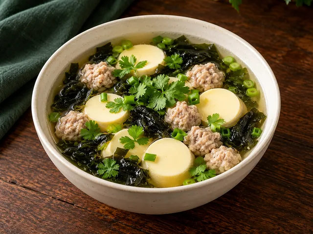

01 / HOW TO VOTE
มาจัดโต๊ะของเราเลือกอาหารให้ครบ 8 หมวด
แต่ละหมวด (A ถึง H) มีเมนูให้เลือก 7 รายการ คุณสามารถคลิกแท็บหมวด A–H หรือกดปุ่ม “หมวดถัดไป” เพื่อเลือกจนครบ 8 หมวด แล้วกดส่งคะแนนเข้าระบบกลางได้เลย ไม่ต้องมีบัญชีผู้ใช้
✓ A B C E F หมวดละ 2 เสิร์ฟ · D G หมวดละ 1 เสิร์ฟ · H เลือก 1 เมนู คิดราคา 2 เสิร์ฟ
✓ คำนวณงบโต๊ะอัตโนมัติ
✓ บันทึกและกลับมาแก้ไขได้ตลอด
กำลังตรวจสอบสถานะระบบ…
02 / MAKE YOUR PICK
เมนูที่อยากให้มีบนโต๊ะ
คลิกเลือกหมวด A–H ด้านล่าง หรือใช้ปุ่มช่วยเลือกชุดเมนูแนะนำเพื่อดูตัวอย่าง
0 / 8 เลือกแล้ว
A B C E F หมวดละ 2 เสิร์ฟ · D G หมวดละ 1 เสิร์ฟ · H เลือก 1 เมนู คิดราคา 2 เสิร์ฟ
✨ ลองเลือกชุดแนะนำครบ 8 หมวด
ล้างที่เลือก

ภาพประกอบเมนู · ราคาอ้างอิง
ต้ม / แกง / อาหารน้ำ
ภาพประกอบสร้างด้วย AI ไม่ใช่ภาพอาหารจริงจากร้าน · เลือกตามชื่อเมนูและจำนวนเสิร์ฟ
01
CHOOSE YOUR SERVINGS
กำลังโหลดเมนู…
← หมวดก่อนหน้า
หมวดถัดไป →
YOUR TABLE / PREVIEW
รายการที่คุณเลือก (0/8 )
สรุปชุดเมนู 8 หมวดของคุณและราคาประมาณการต่อโต๊ะ (8–9 คน)
ค่าอาหารโดยประมาณ ฿0
สำรองข้าวสวย / น้ำแข็ง / น้ำดื่ม ฿320
รวมต่อโต๊ะ (ประมาณ) ฿320
ราคาจากใบเมนูร้าน ใช้จำลองงบต่อโต๊ะ
03 / SAVE YOUR VOTE
บันทึกชุดเมนูของคุณ
เมื่อเลือกครบ 8 หมวดแล้ว กดปุ่ม “บันทึกคะแนนของฉัน” ด้านล่างเพื่อส่งเข้าฐานข้อมูลกลางและให้ผู้จัดงานเห็นคะแนนจริง
ชื่อ / นามแฝง / รหัสที่คุณตั้งเอง (ไม่บังคับ)
ตั้งข้อความได้อิสระ ไม่ต้องใช้ชื่อจริง สูงสุด 80 ตัวอักษร · เว้นว่างได้ ชื่อซ้ำกันได้ ผู้จัดงานเห็นข้อความนี้ ระบบจำเบราว์เซอร์เพื่ออัปเดตใบเดิม
เลือกให้ครบ 8 หมวดเพื่อบันทึกชุดเมนูของคุณ
บันทึกคะแนนของฉัน ✓
ล้างฉบับร่างในเครื่อง / เลือกใหม่
FINAL STEP · ขั้นตอนที่ 4 จาก 4
เลือกและบันทึกเมนูครบ 8 หมวดแล้ว ไปดูบัตรสรุปของคุณและคู่มือวันงาน
ตรวจสอบรายการอาหารทั้ง 8 หมวดที่คุณบันทึกไว้ พร้อมกำหนดการเดินทาง ที่จอดรถ และคำแนะนำคืนวันงาน